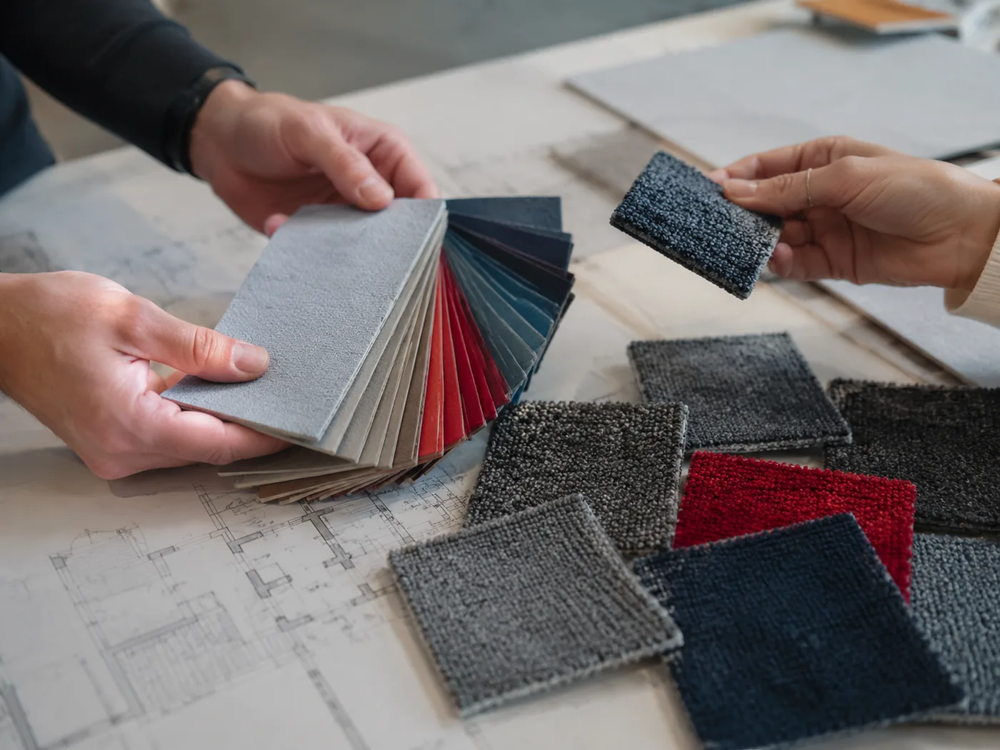

Mattendesigner
Entwerfen Sie Ihre Wunschmatte online – Größe, Grundfarbe, Motiv und Schriftzug bestimmen Sie selbst.
Der Mattendesigner ist unser Online-Werkzeug für individuelle Matten. Sie legen darin Format und Grundfarbe fest, platzieren Ihr Motiv und ergänzen bei Bedarf einen Schriftzug. Der Entwurf wird direkt am Bildschirm dargestellt, sodass Sie Proportionen und Farbwirkung vor der Anfrage beurteilen können.
Was Sie im Mattendesigner festlegen
- Größe: Format der Matte – Standardmaß oder eigenes Maß für Ihren Eingang.
- Grundfarbe: die Farbe des Mattenfelds, auf dem Ihr Motiv steht.
- Motiv: Ihr Logo, Signet oder Piktogramm.
- Schriftzug: Firmenname, Willkommensgruß oder ein kurzer Hinweistext.
Welche Formate und Farben je Qualität möglich sind, finden Sie unter Technische Daten und Farbpaletten.
In vier Schritten zum Entwurf
Format wählen
Größe und Ausrichtung der Matte festlegen – orientiert an der Breite Ihrer Tür oder Ihres Eingangsbereichs.

Grundfarbe setzen
Die Farbe des Mattenfelds bestimmen. Dunkle Töne verbergen Schmutz, helle lassen Motive stärker hervortreten.

Motiv und Text ergänzen
Logo hochladen, Schriftzug eingeben und beides auf der Fläche positionieren.

Entwurf übergeben
Den fertigen Entwurf an uns senden. Wir prüfen die Daten, klären offene Punkte und erstellen Ihr Angebot.
Hinweise zur Gestaltung
- Klare Formen wirken am besten. Ein Textilflor kann feine Haarlinien und sehr kleine Schrift nicht beliebig fein auflösen.
- Kontrast einplanen. Motivfarbe und Grundfarbe sollten sich deutlich unterscheiden, damit das Logo aus dem Gehbereich lesbar bleibt.
- Randabstand beachten. Halten Sie Text und Motiv vom umlaufenden Rand fern, damit nichts angeschnitten wirkt.
- Farben sind Annäherungen. Die Bildschirmdarstellung im Designer gibt die Wirkung wieder, verbindlich sind unsere Originalfarbmuster.
Häufige Fragen
Nein. Der Mattendesigner erzeugt einen Gestaltungsvorschlag. Wir prüfen Ihre Daten und stimmen Format, Qualität und Farben mit Ihnen ab, bevor etwas produziert wird.
Bevorzugt Vektordaten (AI, EPS, PDF, SVG). Liegt Ihr Logo nur als Pixelbild vor, senden Sie es bitte in der höchsten verfügbaren Auflösung – wir prüfen, ob es für Ihr Format ausreicht.
Senden Sie uns, was vorhanden ist, über das Kontaktformular. Wir sagen Ihnen, ob die Vorlage nutzbar ist oder aufbereitet werden muss.
Für bedruckte Motive kommen unter anderem JetPrint, Jet-Print Light, Magic-Mats und Kleen-Way infrage. Die Kennwerte finden Sie unter Technische Daten.